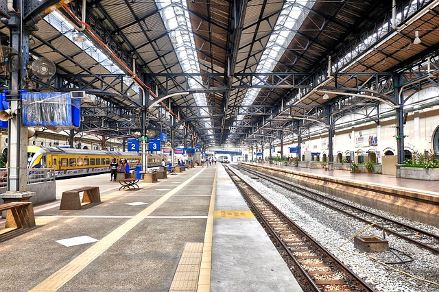

Human Perception & Cognition
| Signifier | Social Signifier |
|---|---|
|
An indicator/signal in the physical or social world that is meaningful to the viewer. Not always deliberate, sometimes incidental—with mixed reliability—but there is no difference to the viewer. |
A signifier that is created/interpreted by people to give meaning about a social activity or appropriate social behavior. Replaces affordances because of broader range, allowing for both deliberate and incidental signifiers. |
| Example | Example |
|
A flag flapping in the wind is an indicator of wind direction and wind speed. Also, because this is a country flag rather than a maritime flag, it is likely an accidental signifier. |

An empty train platform is an indicator that the train has already left (along with the people). However, this isn't completely reliable because it could be that no one is waiting for the train either. |